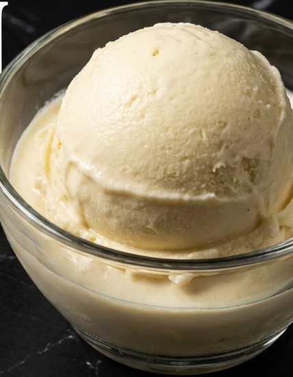

Velvet Banana Cream
Hexapro Vanilla base · LorAnn Banana Cream + Butter Vanilla core
Base Integration
- 150ml Boiling Water + 1 Scoop Bone Broth
- 1 Scoop Marine Collagen
- 200ml Silk Protein Milk
- 100g Liquid Egg Whites
Matrix Add-Ins
- 1.5 Scoops Hexapro Vanilla
- 3–4 tbsp Sweetener (allulose / monk fruit)
- 1/4 tsp Xanthan Gum · 1 Pinch Salt
- 1 tsp LorAnn Banana Cream Emulsion
- 1/2 tsp LorAnn Butter Vanilla Emulsion
464
kcal
79.5g
Protein
11g
Fat
13g
Net Carbs
Processing
- Dissolve bone broth and collagen in the boiling water.
- Blend cold liquids and dry matrix, 90 seconds.
- Settle 15 minutes.
- Freeze uncovered 4h, then lock the lid and freeze -18°C for 24h.
- Flatten the surface with the Deiss masher.
- Spin Lite Ice Cream, execute a dry re-spin.